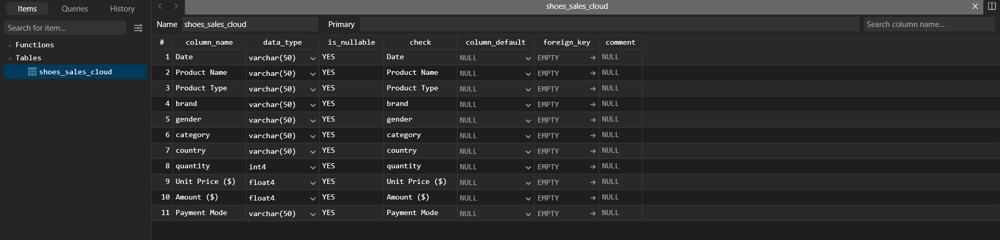
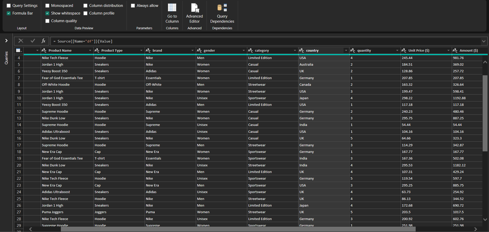
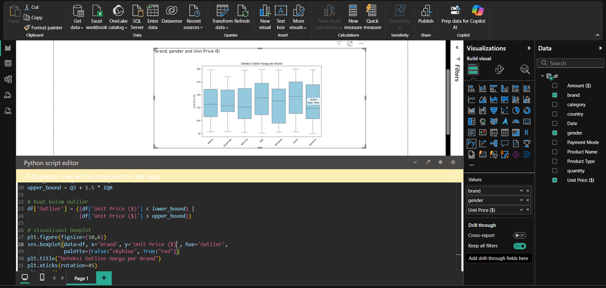
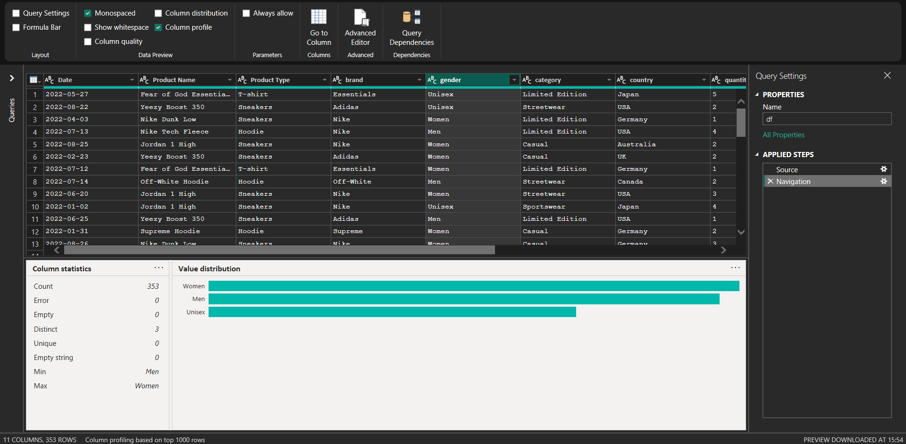
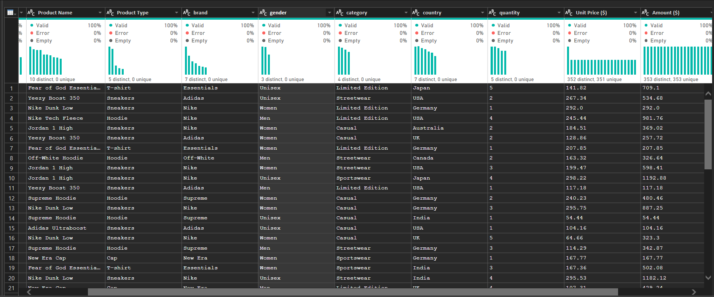

EXPLORATION DATA#
POWER BI#
Tipe Data Dataset#
Pertama tama kita akan mengentahui terlebih dahulu, kira kira apa tipe data dari setiap kolom yang ada pada dataset yang sudah kita kumpulkan. berikut ini adalah tipe datanya


Quality Check Data#
Pada power BI kita bisa melihat kualitas dari suatu data. Caranya adalah dengan mengklik tab Transformasi Data. Selanjutnya berikut ini adalah point point yang penulis akan cek.
Outliers Detection
Berikut ini adalah proses pengecekan outliers dengan menggunakan Power BI, dimana saya juga menjalankan script python untuk menampilkan scatter plotnya 
Konsistensi Data
Data bagus, jadi tidak ada data unik pada kolom yang memang datanya adalah klasifikasi. Berikut ini adalah salah satu contoh gambar yang penulis berikan untuk mengecek konsistensi data. Dimana data gender tidak memiliki data unik dan tetap menggunakan 3 data saja antara Men, Women, Unisex 
Missing Value
Pada dataset yang saya cari dan gunakah tidak ditemukan adanya missing value, bisa terlihat pada gambar yang ada dibawah ini bahwa nilai dari missing valuenya adalah nol. Jadi dataset yang saya gunakan cukup bagus.

Python#
Koneksi dengan PostgresSQL#
import os
import pandas as pd
from dotenv import load_dotenv
from sqlalchemy import create_engine
load_dotenv()
# Ambil variabel dari .env
db_user = os.getenv("USER_POSTGRES")
db_password = os.getenv("PASS_POSTGRES")
db_host = os.getenv("HOST_POSTGRES")
db_port = os.getenv("PORT_POSTGRES")
db_name = os.getenv("DB_POSTGRES")
connection_string = f"postgresql+psycopg2://{db_user}:{db_password}@{db_host}:{db_port}/{db_name}"
postgres_engine = create_engine(connection_string)
python-dotenv could not parse statement starting at line 16
python-dotenv could not parse statement starting at line 19
pg_query = 'SELECT * FROM shoes_sales_cloud'
pg_df = pd.read_sql(pg_query, postgres_engine)
---------------------------------------------------------------------------
KeyboardInterrupt Traceback (most recent call last)
Cell In[3], line 2
1 pg_query = 'SELECT * FROM shoes_sales_cloud'
----> 2 pg_df = pd.read_sql(pg_query, postgres_engine)
File d:\Perkuliahan\Semester 5\Poyek Sains Data\PSD\.venv\Lib\site-packages\pandas\io\sql.py:682, in read_sql(sql, con, index_col, coerce_float, params, parse_dates, columns, chunksize, dtype_backend, dtype)
672 return pandas_sql.read_table(
673 sql,
674 index_col=index_col,
(...) 679 dtype_backend=dtype_backend,
680 )
681 else:
--> 682 return pandas_sql.read_query(
683 sql,
684 index_col=index_col,
685 params=params,
686 coerce_float=coerce_float,
687 parse_dates=parse_dates,
688 chunksize=chunksize,
689 dtype_backend=dtype_backend,
690 dtype=dtype,
691 )
File d:\Perkuliahan\Semester 5\Poyek Sains Data\PSD\.venv\Lib\site-packages\pandas\io\sql.py:1776, in SQLDatabase.read_query(self, sql, index_col, coerce_float, parse_dates, params, chunksize, dtype, dtype_backend)
1719 def read_query(
1720 self,
1721 sql: str,
(...) 1728 dtype_backend: DtypeBackend | Literal["numpy"] = "numpy",
1729 ) -> DataFrame | Iterator[DataFrame]:
1730 """
1731 Read SQL query into a DataFrame.
1732
(...) 1774
1775 """
-> 1776 result = self.execute(sql, params)
1777 columns = result.keys()
1779 if chunksize is not None:
File d:\Perkuliahan\Semester 5\Poyek Sains Data\PSD\.venv\Lib\site-packages\pandas\io\sql.py:1599, in SQLDatabase.execute(self, sql, params)
1597 args = [] if params is None else [params]
1598 if isinstance(sql, str):
-> 1599 return self.con.exec_driver_sql(sql, *args)
1600 return self.con.execute(sql, *args)
File d:\Perkuliahan\Semester 5\Poyek Sains Data\PSD\.venv\Lib\site-packages\sqlalchemy\engine\base.py:1779, in Connection.exec_driver_sql(self, statement, parameters, execution_options)
1774 execution_options = self._execution_options.merge_with(
1775 execution_options
1776 )
1778 dialect = self.dialect
-> 1779 ret = self._execute_context(
1780 dialect,
1781 dialect.execution_ctx_cls._init_statement,
1782 statement,
1783 None,
1784 execution_options,
1785 statement,
1786 distilled_parameters,
1787 )
1789 return ret
File d:\Perkuliahan\Semester 5\Poyek Sains Data\PSD\.venv\Lib\site-packages\sqlalchemy\engine\base.py:1846, in Connection._execute_context(self, dialect, constructor, statement, parameters, execution_options, *args, **kw)
1844 return self._exec_insertmany_context(dialect, context)
1845 else:
-> 1846 return self._exec_single_context(
1847 dialect, context, statement, parameters
1848 )
File d:\Perkuliahan\Semester 5\Poyek Sains Data\PSD\.venv\Lib\site-packages\sqlalchemy\engine\base.py:1986, in Connection._exec_single_context(self, dialect, context, statement, parameters)
1983 result = context._setup_result_proxy()
1985 except BaseException as e:
-> 1986 self._handle_dbapi_exception(
1987 e, str_statement, effective_parameters, cursor, context
1988 )
1990 return result
File d:\Perkuliahan\Semester 5\Poyek Sains Data\PSD\.venv\Lib\site-packages\sqlalchemy\engine\base.py:2358, in Connection._handle_dbapi_exception(self, e, statement, parameters, cursor, context, is_sub_exec)
2356 else:
2357 assert exc_info[1] is not None
-> 2358 raise exc_info[1].with_traceback(exc_info[2])
2359 finally:
2360 del self._reentrant_error
File d:\Perkuliahan\Semester 5\Poyek Sains Data\PSD\.venv\Lib\site-packages\sqlalchemy\engine\base.py:1967, in Connection._exec_single_context(self, dialect, context, statement, parameters)
1965 break
1966 if not evt_handled:
-> 1967 self.dialect.do_execute(
1968 cursor, str_statement, effective_parameters, context
1969 )
1971 if self._has_events or self.engine._has_events:
1972 self.dispatch.after_cursor_execute(
1973 self,
1974 cursor,
(...) 1978 context.executemany,
1979 )
File d:\Perkuliahan\Semester 5\Poyek Sains Data\PSD\.venv\Lib\site-packages\sqlalchemy\engine\default.py:951, in DefaultDialect.do_execute(self, cursor, statement, parameters, context)
950 def do_execute(self, cursor, statement, parameters, context=None):
--> 951 cursor.execute(statement, parameters)
File C:\Program Files\WindowsApps\PythonSoftwareFoundation.Python.3.11_3.11.2544.0_x64__qbz5n2kfra8p0\Lib\encodings\utf_8.py:15, in decode(input, errors)
11 ### Codec APIs
13 encode = codecs.utf_8_encode
---> 15 def decode(input, errors='strict'):
16 return codecs.utf_8_decode(input, errors, True)
18 class IncrementalEncoder(codecs.IncrementalEncoder):
KeyboardInterrupt:
print("Berikut ini adalah dataset yang akan saya gunakan dalam tugas ini: ")
print(pg_df)
df = pg_df.copy()
Tipe Data Dataset#
print(type(df['Date'][0]))
print(type(df['Product Name'][0]))
print(type(df['Product Type'][0]))
print(type(df['brand'][0]))
print(type(df['gender'][0]))
print(type(df['country'][0]))
print(type(df['Unit Price ($)'][0]))
print(type(df['Amount ($)'][0]))
print(type(df['Payment Mode'][0]))
Eksplorasi Data#
Outliers Detection#
import pandas as pd
import matplotlib.pyplot as plt
import seaborn as sns
# hitung IQR
Q1 = df['Unit Price ($)'].quantile(0.25)
Q3 = df['Unit Price ($)'].quantile(0.75)
IQR = Q3 - Q1
lower_bound = Q1 - 1.5 * IQR
upper_bound = Q3 + 1.5 * IQR
# buat kolom outlier
df['Outlier'] = ((df['Unit Price ($)'] < lower_bound) |
(df['Unit Price ($)'] > upper_bound))
# visualisasi boxplot
plt.figure(figsize=(10,6))
sns.boxplot(data=df, x='brand', y='Unit Price ($)', hue='Outlier',
palette={False:"skyblue", True:"red"})
plt.title("Deteksi Outlier Harga per Brand")
plt.xticks(rotation=45)
plt.show()
Konsistensi Data#
# ============================
# Cek format tanggal valid
# ============================
df["valid_date"] = pd.to_datetime(df["Date"], errors="coerce")
invalid_dates = df[df["valid_date"].isna()]
# ============================
# Cek konsistensi kolom Gender
# ============================
valid_genders = ["Men", "Women", "Unisex"]
invalid_genders = df[~df["gender"].isin(valid_genders)]
# ============================
# Cek nilai Quantity
# ============================
invalid_quantity = df[df["quantity"] <= 0]
# ============================
# Cek konsistensi Amount = Quantity * Unit Price
# ============================
df["calc_amount"] = df["quantity"] * df["Unit Price ($)"]
invalid_amount = df[df["calc_amount"].round(2) != df["Amount ($)"].round(2)]
# ============================
# Cek Payment Mode
# ============================
valid_payment = ["Card", "Cash on Delivery", "UPI", "Net Banking", "Wallet"]
invalid_payment = df[~df["Payment Mode"].isin(valid_payment)]
# ============================
# Cek duplikasi data
# ============================
duplicates = df[df.duplicated(keep=False)]
print("=== Data dengan format tanggal tidak valid ===")
print(invalid_dates)
print("\n=== Data dengan gender tidak valid ===")
print(invalid_genders)
print("\n=== Data dengan quantity tidak valid ===")
print(invalid_quantity)
print("\n=== Data dengan amount tidak konsisten ===")
print(invalid_amount)
print("\n=== Data dengan payment mode tidak valid ===")
print(invalid_payment)
print("\n=== Data duplikat ===")
print(duplicates)
Missing Value#
print("Jumlah missing value per kolom:")
print(df.isnull().sum(), "\n")
missing_percentage = df.isnull().mean() * 100
print("Persentase missing value per kolom:")
print(missing_percentage, "\n")